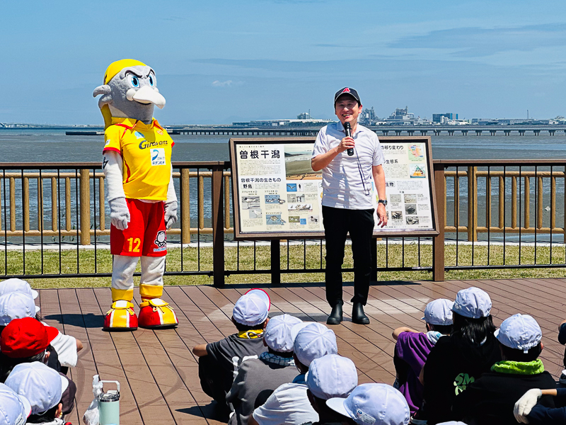
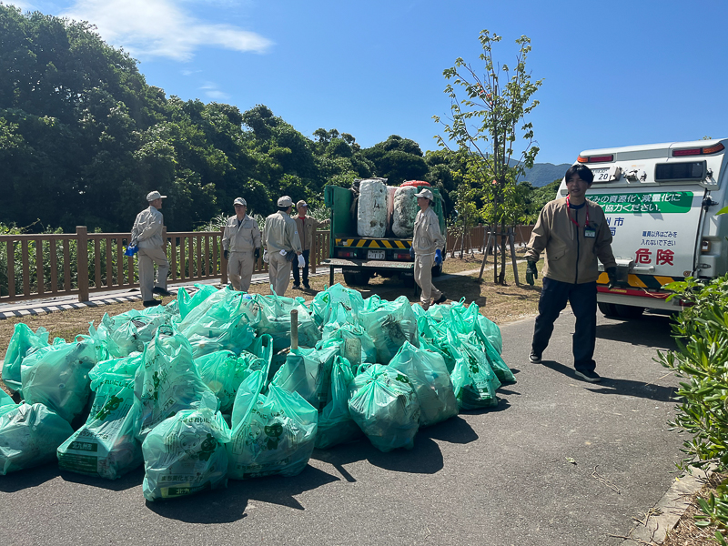
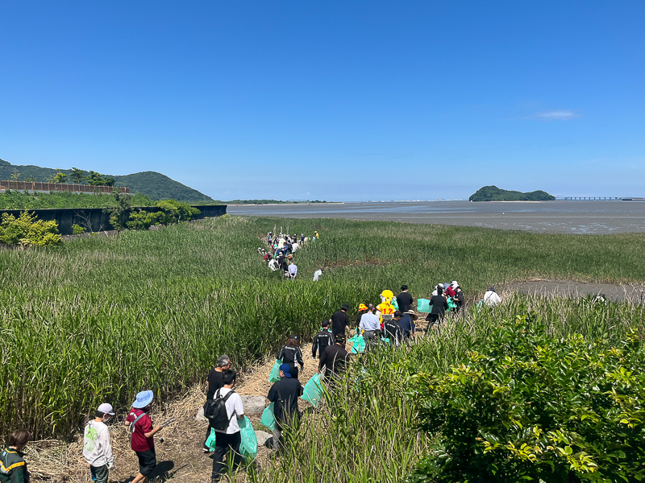
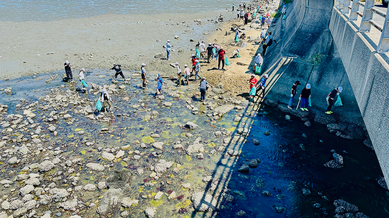

6月15日、曽根東小学校の4～6年生をはじめ、地域企業や団体、保護者の皆さんとともに、「春の曽根干潟クリーン作戦」を実施しました。
地域の貴重な自然環境である曽根干潟の保全を目的として、児童のほか、株式会社ギラヴァンツ北九州、トヨタ自動車九州株式会社、ヤマト運輸株式会社、日本野鳥の会北九州支部をはじめとする多くの皆さまにご参加いただき、世代や立場を超えた協働の取組となりました。
一人ひとりの思いが大きな輪に
活動に先立ち、武内和久市長から参加した児童たちへ激励のメッセージが送られました。
市長は、
「誰かひとりの『こうしたいな』『行動したいな』という思いで始まった動きが、こんなにも多くの皆さんの輪となって広がり、この曽根干潟をきれいにしようという活動につながっています。
こうして、一人ひとりの想いから行動がどんどん広がっていくのは、本当にすごいことですよね。
これからもぜひ、私たちの曽根干潟がきれいなままで未来へ引き継がれていくように、一緒に力を合わせてやっていきましょう。」
と呼びかけました。
また、会場には災害時に活躍する移動式トイレカーも登場。車体にはネイチャーポジティブをテーマに、曽根干潟をはじめとした市内の豊かな自然の写真がデザインされており、参加者の関心を集めました。

合計710kgのごみを回収
参加者の皆さんの協力により、今回のクリーン作戦では合計710kgのごみを回収することができました。
- 6年生側エリア：300kg
- 4・5年生側エリア：410kg
児童たちは仲間と協力しながら清掃活動に取り組み、身近な自然を守ることの大切さを体感しました。

ネイチャーポジティブな未来へ
小倉南区にある曽根干潟は、環境省の「重要湿地」にも選定されている広大な自然の宝庫で、国の絶滅危惧種である「カブトガニ」の貴重な産卵地であるほか、渡り鳥や希少な底生生物が数多く生息しています。
今回の活動は、一人ひとりの小さな行動が集まり、自然をより豊かにしていく「ネイチャーポジティブ」の実践そのものです。
今後も、北九州ネイチャーポジティブネットワークは、市民、学校、企業、団体が連携しながら、曽根干潟の豊かな自然を次の世代へ引き継いでいけるよう取り組みを進めていきます。
ご参加いただいた皆さま、ありがとうございました。

